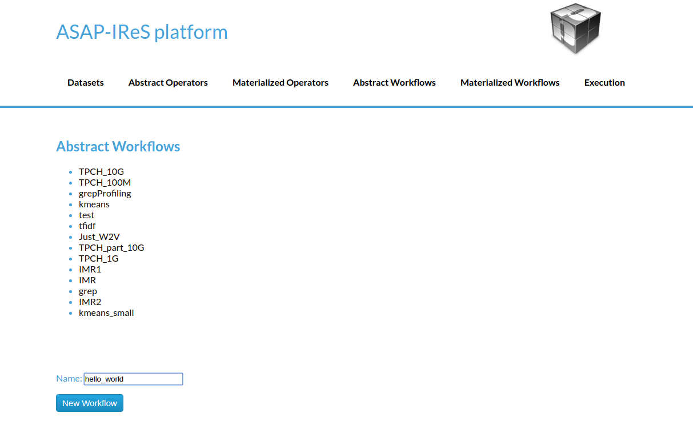
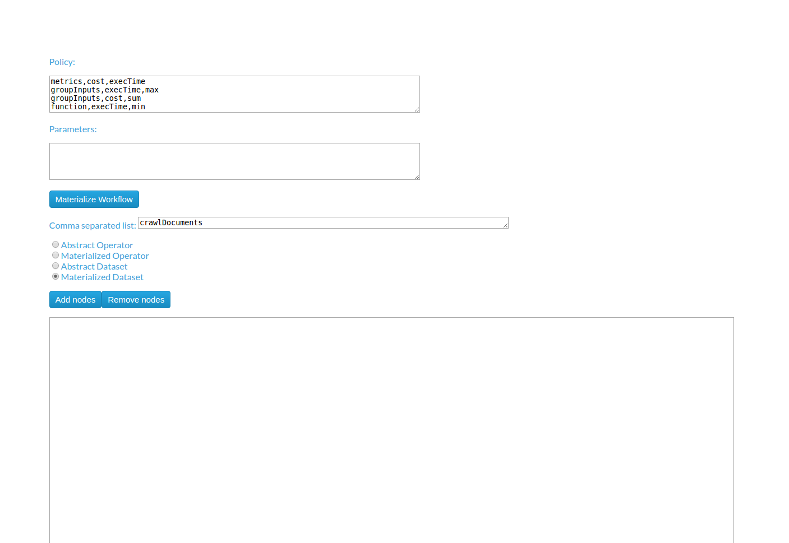
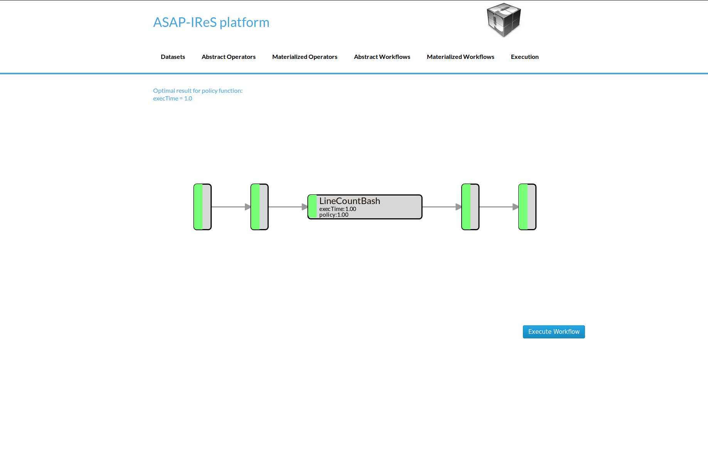
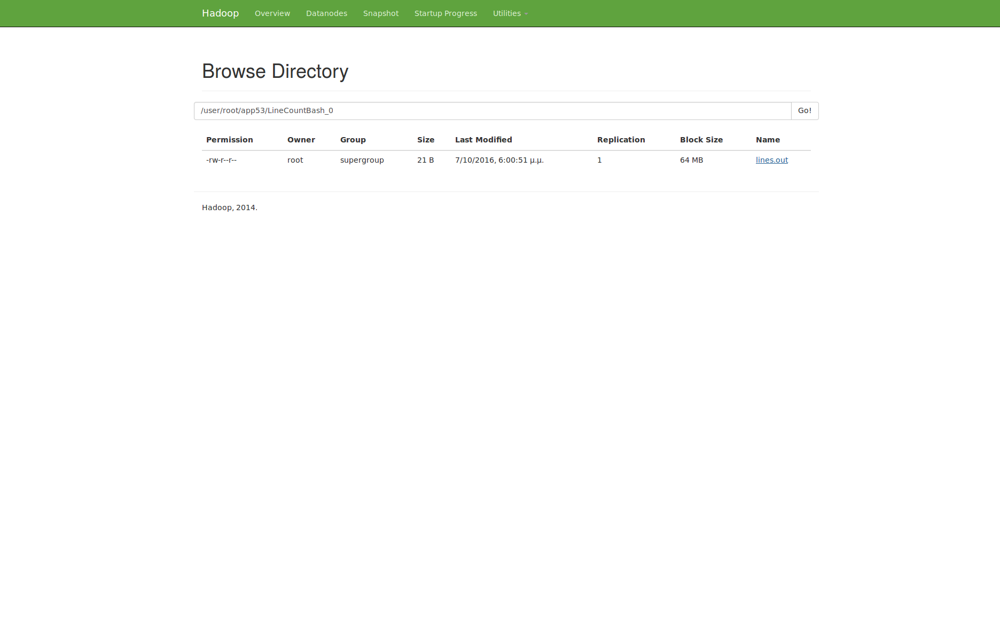

Installation & Deployment¶
Installing IReS-Platform¶
Overview¶
Installation of IRes-Platform requires 3 steps
Clone IReS-Platform to the server¶
For a quick reference of how to use git, click here. Open a terminal (Linux) and navigate to a desired directory where IReS-Platform files will be cloned e.g. asap. Then, clone the project by entering the following command
git clone git@github.com:project-asap/IReS-Platform.git
Run install.sh¶
After successful cloning of IReS-Platform inside the $IRES_HOME various folders and files can be found. Among them there exists install.sh.
You can run install.sh from any directory you would like. Here for demnostration reasons is assumed that the current working directory is $IRES_HOME. Executing,
./install.sh
will start building IReS-Platform. Upon successful building you will be prompted to provide the path where Hadoop YARN is located in your computer. By doing this, IReS gets connected with Hadoop YARN. You can skip this step and the installation will be finished.
NOTE: if you do not provide an existing YARN installation, then IReS will not be able to execute any workflow. Also, resources and cluster services monitoring will not be functioning. you can provide YARN installation path afterwards as it will be shown straight ahead. Connecting IReS to Hadoop YARN
Executing,
./install.sh -c $YARN_HOME,$IRES_HOME
will make the connection of IReS and YARN, where $YARN_HOME and $IRES_HOME correspond to the absolute paths of YARN’s and IReS’s home folder. Cluster Monitoring
This step requires the connection of IReS with YARN. Assuming that this connections has been established, then the user should update the file
$YARN_HOME/etc/hadoop/yarn-site.xml
and more specifically the values of the following properties,
yarn.nodemanager.services-running.per-node
yarn.nodemanager.services-running.check-availability
yarn.nodemanager.services-running.check-status
These properties and some others have been added during the connection of IReS and YARN to enable IReS run workflows over YARN and cluster resources and services monitoring. Although details about filling these values are provided into $YARN_HOME/etc/hadoop/yarn-site.xml, roughly speaking, yarn.nodemanager.services-running.per-node property describes the cluster services running per node. The property, yarn.nodemanager.services-running.check-availability provides the commands per service that “tell” if the relative service runs or not. Finally, the property yarn.nodemanager.services-running.check-status has the statuses per service that the corresponding service has when it runs.
Validate installation¶
Here are some tips to confirm IReS installation.
If anything goes wrong during the build process of IReS, error messages will be print out and a log file will be provided.
Start the IReS server¶
Run IReS server by running the command
./install.sh -r start
No exception should be raised. Also, the jps command should print a “Main” process running that corresponds to ASAP server. Run ASAP server web user interface at http://your_hostname:1323/web/main. IReS home page should be displayed. Run a workflow, for example run “hello_world” from “Abstrack Workflows” tab and see what happens not only in IReS web interface but also in YARN and HDFS web interfaces. Make sure that YARN has been started before running any workflow. Click on “Cockpit” tab to verify that the expected services to run are really running.
Running the HelloWorld workflow¶
The HelloWorld is a simple workflow constists of just a single operator, designed for demonstration purposes. To run the HelloWolrd follow the next steps:
- Go to IReS UI: http://localhost:1323/web/main
IReS Home Page
- Go to the Abstract Workflows tab and select the HelloWorld workflow

Abstract Workflows Tab
- Then click on Materialize Workflow button
Abstract HelloWorld Workflow
- Click on the Execute Workflow button to start the execution

The materialized HelloWorld workflow
In the figures below we can see the execution process
{kind=link}
The execution has been started

The submitted YARN application

The execution has been finished
Create the HelloWorld workflow from scratch (UI)¶
In this section we describe the process of design a new workflow from scratch.
1. Creating Abstract Operators¶
In order to create a new workflow the definition of the abstract operators is needed. To define the HelloWorld abstract operator go to the Abstract Operators tab and enter the operator description in the text box. To create and save the new abstract operator click the “Add operator” button.

2. Creating Materialized Operators (Server-side)¶
Currently, to add a materialized operator a folder with the least required files is needed.
- From the bash shell, go to the asapLibrary/operators folder in the IReS installation directory.
cd $ASAP_HOME/target/asapLibrary/operators
- Then, create a new folder named with the new materialized operator’s name.
mkdir HelloWorld
- Create the description file and enter the information below
$ nano description
Constraints.Engine=Spark
Constraints.Output.number=1
Constraints.Input.number=1
Constraints.OpSpecification.Algorithm.name=HelloWorld
Optimization.model.execTime=gr.ntua.ece.cslab.panic.core.models.UserFunction
Optimization.model.cost=gr.ntua.ece.cslab.panic.core.models.UserFunction
Optimization.outputSpace.execTime=Double
Optimization.outputSpace.cost=Double
Optimization.cost=1.0
Optimization.execTime=1.0
Execution.Arguments.number=1
Execution.Argument0=testout
Execution.Output0.name=$HDFS_OP_DIR/testout
Execution.copyFromLocal=testout
- Create the .lua file with the execution instructions
$ nano HelloWorld.lua
operator = yarn {
name = "Execute Hello world",
timeout = 10000,
memory = 1024,
cores = 1,
container = {
instances = 1,
--env = base_env,
resources = {
["HelloWorld.sh"] = {
file = "asapLibrary/operators/HelloWorld/HelloWorld.sh",
type = "file", -- other value: 'archive'
visibility = "application" -- other values: 'private', 'public'
}
},
command = {
base = "./HelloWorld.sh"
}
}
}
- Create the executable
$ nano HelloWorld.sh
#!/bin/bash
echo "Hello world" >> $1
- Restart the IReS server
$ $IRES_HOME/asap-server/src/main/scripts/asap-server restart
3. Creating Materialized Operators (Client-side via the REST API)¶
As an alternative of section 2, a new materialized operator can be added using the provided REST API. This can be done by using the addTarball method of the REST API. The steps are similar with these of section 2.
- Create a folder for the new operator (name does not matters)
mkdir operator
- Navigate to the new folder
cd operator
- Create the description file and enter the information below. By adding the new operator via addTarball method there is no need of creating a .lua file as it will be generated automatically. In such a case, three more parameters should be added in the Execution tree. These parameters are cores, memory and command.
$ nano description
Constraints.Engine=Spark
Constraints.Output.number=1
Constraints.Input.number=1
Constraints.OpSpecification.Algorithm.name=HelloWorld
Optimization.model.execTime=gr.ntua.ece.cslab.panic.core.models.UserFunction
Optimization.model.cost=gr.ntua.ece.cslab.panic.core.models.UserFunction
Optimization.outputSpace.execTime=Double
Optimization.outputSpace.cost=Double
Optimization.cost=1.0
Optimization.execTime=1.0
Execution.Arguments.number=1
Execution.Argument0=testout
Execution.Output0.name=$HDFS_OP_DIR/testout
Execution.copyFromLocal=testout
####Extra Execution Parameters###
Execution.cores=1
Execution.memory=1024
Execution.command=./HelloWorld.sh
- Put all files in the current directory in a compress (tar.gz) file:
tar -cvf helloworld.tar.gz *
this command must be executed inside the operator’s folder. The corresponding folder in IReS server will be created automatically.
- Send the tarball via the REST API using curl:
curl -H "Content-Type: application/octet-stream" -X POST --data-binary @myOperator.tar.gz ires_host:1323/operators/addTarball?opname=HelloWorld
The tarball for this example is available here.
4. Creating the Abstract Workflow¶
Now we will combine everything we created in the above steps to generate the new workflow. Go to the Abstract Workflows tab and click the “New Workflow” button.
{kind=link}
Then we add the workflow parts one-by-one. First we add the crawlDocuments dataset from the dataset library. Select the Materialized Dataset radio button and enter the dataset name in the Comma seperated list text box. Then click the Add nodes button to add the dataset node to the workflow graph. Repeat this step to add an output node with name d1. Just enter the name d1 to the text box and click the Add nodes button.
{kind=link}

Add the HelloWorld abstract operator to the workflow. Select the Abstract Operator radio button, enter the operator’s name (HelloWold) in the text box and click again the Add nodes button.

Describe the workflow by connecting the graph nodes defined in the previous steps as shown in the figure bellow and click the Change graph button.

In the figure bellow we can see the generated Abstract Workflow. Now click the Materialize workflow

The resulting materialized workflow
Create an input-process-output workflow¶
In this example we will create a workflow consists of one operator which takes as input a text file and produces as output the number of lines.
Dataset definition¶
In order to create the workflow input dataset you need to add the dataset definition into IReS library. Create a file named ‘asapServerLog’ into the asapLibrary/datasets/ folder and add the following content:
Optimization.documents=1
Execution.path=hdfs\:///user/root/asap-server.log
Constraints.Engine.FS=HDFS
This step assumes that a file named ‘asap-server.log’ exists in the hdfs. You can download the log file used in this example through this link.
Abstract operator definition¶
Create the LineCount abstract operator by creating a file named ‘LineCount’ in the asapLibrary/abstractOperators folder with the following content:
Constraints.Output.number=1
Constraints.Input.number=1
Constraints.OpSpecification.Algorithm.name=LineCount
Abstract workflow definition¶
Create the LineCountWorkflow workflow by creating a folder named ‘LineCountWorkflow’ in the asapLibrary/abstractWorkflows. The abstract workflow folder should consist of three required components: the datasets folder , the operators folder and a file named graph.
- datasets: Create a folder named ‘datasets’ and copy the asapServerLog file from the asapLibrary/datasets/ folder into it. Then, create an empty file named ‘d1’ (touch d1).
- graph: Create a file named ‘graph’ and add the following content:
asapServerLog,LineCount
LineCount,d1
d1,$$target
This graph file defines the workflow graph as follows: asapServerLog dataset is input to the LineCount abstract operator, LineCount operator outputs the result into d1. Finally, d1 node maps to the final result ($$target).
- operators: Create a folder named ‘operators’ which will contain the operators involved in the worflow. In the ‘operators’ folder create a file named ‘LineCount’ and add the following content:
Constraints.Engine=Spark
Constraints.Output.number=1
Constraints.Input.number=1
Constraints.OpSpecification.Algorithm.name=LineCount
Restart the server for changes to take effect.
$IRES_HOME/asap-platform/asap-server/src/main/scripts/asap-server restart
Materialized Operator Definition (via REST)¶
Create a folder locally and add the required description file as well as all other files needed for the exeuction.
- description file: Create inside the folder a file named description with the following content:
Constraints.Engine=Spark
Constraints.Output.number=1
Constraints.Input.number=1
Constraints.OpSpecification.Algorithm.name=LineCount
Optimization.model.execTime=gr.ntua.ece.cslab.panic.core.models.UserFunction
Optimization.model.cost=gr.ntua.ece.cslab.panic.core.models.UserFunction
Optimization.outputSpace.execTime=Double
Optimization.outputSpace.cost=Double
Optimization.cost=1.0
Optimization.execTime=1.0
Execution.Arguments.number=2
Execution.Argument0=In0.path.local
Execution.Argument1=lines.out
Execution.Output0.name=$HDFS_OP_DIR/lines.out
Execution.copyFromLocal=lines.out
Execution.copyToLocal=In0.path
- executable file: Create the executable named ‘count_lines.sh’ with the following content:
#!/bin/bash
wc -l $1 >> $2
and make it executable
chmod +x count_lines.sh
- Send the operator via the ‘send_operator.sh’ script:
The script is available at $IRES_HOME/asap-server/src/main/scripts location or you can download it directly.
Workflow Materialization¶
To materialize the workflow go to the Abstract Workflows tab, click on the LineCountWorkflow.

Click on the Materialize Workflow button
{kind=link}
Now you can see the materialized LineCount workflow. Click on Execute Workflow button to trigger the execution

When the execution finish, navigate to the HDFS file browser to see the output located at appN folder.
{kind=link}